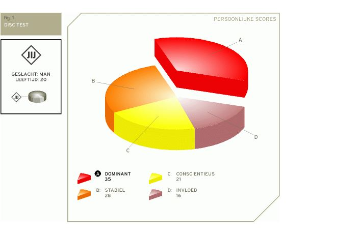

Je DISC test rapport
Jouw specifieke verdeling van scores op de DISC test geeft een indicatie van je unieke persoonlijke DISC profiel. Je kunt het zien als je eigen persoonlijke DISC 'DNA'. In de taartgrafiek hieronder staat de verdeling van jouw scores.
Het hoogste percentage komt waarschijnlijk overeen met jouw meest dominante gedragstijl, het op een na hoogste percentage met je daarna meest bepalende gedragstijl, etc. De vier DISC factoren staat voor jou geordend als volgt: Dominant, Stabiel, Consciëntieus en Invloed.

Mijn DISC persoonlijkheidstypering
Je meest duidelijke gedragsstijl is waarschijnlijk Dominant, gevolgd door Stabiel. Wanneer je duidelijk eerst Dominant en daarna Stabiel als belangrijkste gedragsstijl hebt, geldt dat de positieve indruk die je dan op mensen maakt als volgt is:
Je reactie op uitdagingen is praktisch, realistische en enthousiast van aard. Je houdt van feiten en bent goed in staat hulp bieden mits er concrete informatie beschikbaar is. Je bent zelfverzekerd, zelfstandig en individualistisch. Waarschijnlijk zien mensen je als rationeel en probleemoplossend tegelijkertijd.